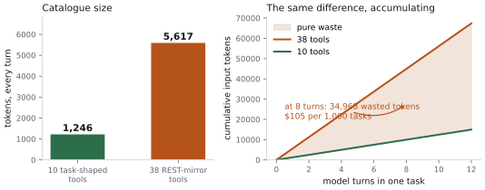
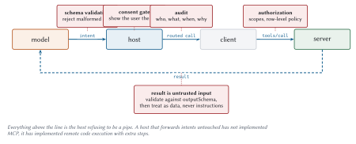

Tools: The Execution Layer
Brody says it after seeing the thing he has been theorising about, at actual scale, for the first time. Everybody has this moment with tool catalogues. You design six tools, they work beautifully, you ship. Eighteen months later there are forty-one, three of them do nearly the same thing, and the model has started picking the wrong one about a fifth of the time and nobody can say when that started.
This chapter is about not getting there. Tools are the primitive that does the work, and they are the primitive where design mistakes compound fastest, because their cost is charged on every request forever.
Mechanics first
Two methods. That is the entire surface.
tools/list
{
"jsonrpc": "2.0",
"id": 1,
"result": {
"resultType": "complete",
"tools": [
{
"name": "assess_account_risk",
"title": "Assess account risk",
"description": "Score one commercial account for credit risk...",
"inputSchema": { "type": "object", "properties": { ... } },
"outputSchema": { "type": "object", "properties": { ... } },
"annotations": { "readOnlyHint": true, "idempotentHint": true }
}
],
"nextCursor": "50",
"ttlMs": 300000,
"cacheScope": "public"
}
}Three fields at the bottom that did not exist in 2025 and matter a great deal. nextCursor means catalogues paginate. ttlMs and cacheScope mean the client can stop asking. Chapter 6 covers the caching model; here the relevant fact is that a well-behaved client fetches your catalogue once per TTL and reuses it across every task in that window.
There is also a requirement that reads like a footnote and is not:
That last part is what makes it nasty, so it is worth understanding the machinery you are about to break.
What a prompt cache actually caches
Every model turn re-sends the whole conversation. The system prompt, the tool catalogue, the user’s request, and every tool result so far, all of it, on every turn. The model has no memory between calls, so there is nothing else it could do.
Processing those tokens costs real time. Before the model can emit its first output token it must run the entire input through the network and build the internal state, the key-value attention cache, that generation reads from. For a 6,000-token prompt that is the dominant part of time-to-first-token.
Providers noticed that consecutive turns of the same conversation share almost all of their input, and that the shared part is at the front. Turn four’s prompt is turn three’s prompt with more appended. So they cache the computed state, keyed by the input prefix, and on the next turn they match the longest prefix they have already processed and resume from there. What you pay full price for is only the new suffix.
The keying is exact, and it is positional. The cache matches on the token sequence from position zero. A single token that differs at position 300 invalidates everything from 300 onward, no matter how similar the rest is.
Now put your tool catalogue in that picture. It sits near the front, right behind the system prompt, which is the most valuable real estate in the prompt because everything after it depends on it matching. Serialise your forty tools in dictionary order on one request and a different dictionary order on the next, and the prefix diverges at the first tool that moved. Every turn after that misses.
The failure is quiet in a specific and expensive way. Nothing errors. Your server’s latency is unchanged, because your server did its job in the same 8 milliseconds it always does. The cost lands on the provider’s side, as a time-to-first-token that is several times worse and an input bill charged at the uncached rate, and the only place it shows up is a graph nobody thinks to blame on a loop over a hash map.
Meridian sorts by name and asserts it:
def test_tools_list_order_is_stable(self):
"""Unstable ordering silently destroys the provider's prompt cache."""
server = tiny_server()
for i in range(6):
server.add_tool(_noop_tool(f"tool_{i}"))
orders = [
[t["name"] for t in server.handle(
request("tools/list", req_id=i))["result"]["tools"]]
for i in range(5)
]
self.assertEqual(len(set(map(tuple, orders))), 1)If you build your catalogue by iterating a Python dictionary, a Go map, or a database query with no ORDER BY, you are one refactor away from this bug. Sort explicitly.
Cursors, and the empty string that ends your catalogue early
nextCursor is the other half of tools/list, and it has one rule that bites everybody once.
Pagination in MCP is cursor-based. The server returns a page plus, optionally, a nextCursor. The client sends that value back as a cursor parameter to get the next page, and keeps going until a response arrives with no nextCursor at all. Page size is the server’s business; clients must not assume one.
The cursor is opaque. It is a string the server minted and the client must not read, parse, or reason about. Meridian’s happens to be a decimal offset, which is honest for a catalogue that is small and sorted and lives in memory:
def _paginate(self, items: list, cursor: str | None) -> tuple[list, str | None]:
"""Opaque cursors over a stable ordering.
The cursor is an offset here because the catalogue is small and stable.
A server paginating over a mutable database should encode a sort key
instead, because offsets skip and duplicate rows when the underlying
set shifts between pages.
"""That docstring is the reason opacity is a rule and not a preference. Offsets are wrong for anything mutable: delete a row while a client is between pages and page two starts one row late, silently skipping an item the client will never see. Encoding a sort key instead fixes it, and a client that had been parsing your integers breaks the day you switch. Since the client must not look, you are free to change.
Now the rule that bites. A client decides it has reached the end when nextCursor is absent, and an empty string is a perfectly valid cursor value. So this, which is the obvious thing to write, is a bug:
while cursor: # WRONG: stops on a valid empty-string cursor
page = list_tools(cursor)
cursor = page.get("nextCursor")cursor = None
while True:
page = list_tools(cursor)
...
if "nextCursor" not in page:
break
cursor = page["nextCursor"]The difference shows up only against a server that emits an empty first cursor, which is rare, which is why the bug survives testing and appears in production as “we only see the first ten tools from that one vendor”.
Invalid cursors get -32602. Meridian raises it for anything that is not an integer inside the current range, which also means a cursor from a catalogue that has since shrunk fails loudly rather than returning nonsense.
tools/call
{
"jsonrpc": "2.0",
"id": 2,
"method": "tools/call",
"params": {
"name": "assess_account_risk",
"arguments": { "accountId": "ACC-1042", "exposureUsd": 250000 }
}
}And back:
{
"jsonrpc": "2.0",
"id": 2,
"result": {
"resultType": "complete",
"content": [{ "type": "text", "text": "{\"score\":55.4,...}" }],
"structuredContent": { "accountId": "ACC-1042", "score": 55.4,
"band": "elevated", "drivers": [...] },
"isError": false
}
}The result carries the same data twice, deliberately: structuredContent for anything that will parse it, content for backwards compatibility and for models that do better with text. Chapter 10 shows the third consumer, an MCP App, which reads structuredContent and never puts it in the model’s context at all.
Designing tools a model can actually use
Now the part that matters more than the mechanics.
Stop mirroring your REST API
The single most common failure. You have an API. It has endpoints. Wrapping each endpoint as a tool is mechanical, fast, and completable in an afternoon, which is exactly why so many people do it.
Meridian shipped this way. You can still run it:
python3 -m meridian.serve risk --fatIt exposes get_account and list_account, then create_exposure, then update_covenant, then delete_collateral, and two dozen more in the same shape. Every one is a faithful wrapper around a REST endpoint. Every one works.
Here is what it costs.

Twenty-six dollars per thousand tasks, for nothing. And that is only the money. The real damage is upstream: the model now chooses among 38 similar options where it used to choose among 10 distinct ones, selection accuracy falls, and a wrong choice costs a whole extra loop iteration to detect and recover from.
Why does the REST shape fail? Because REST is organised around resources and verbs, and a planner reasons in tasks and outcomes. To answer “is this account risky”, a model given a REST mirror must plan: get the account, list its exposures, list its covenants, fetch the rating, then combine. Five round trips, five model turns, five chances to go wrong.
Given a task-shaped tool it calls assess_account_risk once.
The three rewrites that fix most catalogues
Collapse read-then-combine chains. Any sequence the model performs identically every time is a tool you have not written yet. If your traces show get_x always followed by get_y then compute_z, ship compute_z_for_x.
Add a batch variant of anything called in a loop. Meridian has assess_account_risk for one account and rank_portfolio_risk for many. Without the second, a portfolio review of forty accounts is forty round trips and forty model turns. With it, one. The description points at it explicitly, because the model reads descriptions:
# sketch: elided from the shipped handler
@server.tool(
"rank_portfolio_risk",
"Rank a set of accounts by risk score in one call. Prefer this over "
"calling assess_account_risk repeatedly.",
...
)Delete tools nobody calls. You have telemetry. Any tool with no calls in ninety days is costing you tokens on every request in exchange for nothing. Delete it. If somebody objects, the objection is usually about the endpoint existing, not about the tool existing, and those are different things.
Descriptions are prompt engineering
The description is the only thing the model sees when it decides, and you pay for it on every turn. So it should be short and it should contain the information that distinguishes this tool from its neighbours.
Bad:
Get a account record via the core banking API. Wraps GET /v2/accounts.
Accepts an optional id, an optional body, and standard pagination
parameters. Returns the raw account representation as stored by the
system of record, including audit fields, soft-delete markers, and
denormalised references to related entities.Fifty-one tokens describing the transport and the storage layer, neither of which is a fact the model can act on.
Good:
Score one commercial account for credit risk. Returns a 1-99 score, a
band, and the weighted factors behind it.Twenty-three tokens, all of them about what the model gets back.
Three rules that survive contact with reality:
Lead with the outcome. The model is choosing between outcomes, so give it the one this tool produces in the first six words.
Name the discriminator when tools are adjacent. “Prefer this over calling X repeatedly” is worth its tokens.
Do not document your transport. The model cannot use “wraps GET /v2/accounts” and you pay for it forever.
Schemas
JSON Schema 2020-12 by default, and 2026-07-28 loosened the restriction so you can use the full dialect. That freedom comes with two obligations.
The $ref rule, which is a security rule
if "$ref" in schema and str(schema["$ref"]).startswith(("http://", "https://")):
raise errors.InvalidParams(f"{where}: remote $ref is not dereferenced")A schema that fails to validate because of an unresolved external $ref must be rejected. Treating it as permissive fails open, which means an attacker can disable your validation by pointing at a URL you will not fetch.
The composition rule, which is a denial-of-service rule
anyOf, oneOf, allOf, if/then, and $defs are expressive and expensive. Nested deeply enough, validation cost explodes combinatorially, and a hostile schema becomes a CPU bomb against whoever validates it.
So bound it: a maximum depth, a cap on subschemas, or a per-validation time budget. Meridian caps depth at twelve, which no honest tool schema approaches:
if depth > 12:
raise errors.InvalidParams(f"{where}: schema nesting exceeds the depth limit")Output schemas earn their keep
Optional, and you should use them anyway.
Without one, a model receives text and has to parse it. Sometimes it parses wrong, which costs a retry, which costs a model turn. With one, the client validates structuredContent before it ever reaches the model, and a malformed response is caught at the boundary, before it can confuse the planner two turns later.
output_schema={
"type": "object",
"properties": {
"accountId": {"type": "string"},
"score": {"type": "number"},
"band": {"type": "string",
"enum": ["low", "moderate", "elevated", "high"]},
"drivers": {"type": "array", "items": {...}},
},
"required": ["accountId", "score", "band", "drivers"],
}That enum on band is doing real work. It tells the model the complete set of possible answers, which means it will not invent "very high" and it will not write branching logic for a fifth case that cannot occur.
Annotations, and why they are untrusted
annotations={"readOnlyHint": True, "idempotentHint": True}There are four of them, and the defaults are chosen so that saying nothing is the cautious answer:
| Annotation | Default | Means |
readOnlyHint |
false |
The tool does not modify its environment |
destructiveHint |
true |
Updates may destroy, not only add |
idempotentHint |
false |
Repeating the same call changes nothing further |
openWorldHint |
true |
It touches an open world of external entities |
Read the defaults column again, because it is the design. Omit annotations entirely and your tool is treated as writing, destructive, non-idempotent, and open-world, which is the safest reading of a tool nobody described. You opt into leniency; you never fall into it.
The last two get overlooked. idempotentHint is what tells a host it may retry a timed-out call safely, and Chapter 3 explained why retries are now ordinary. openWorldHint distinguishes a web search, whose results come from anywhere, from a lookup against your own database. That distinction is exactly the one Chapter 19 cares about, because open-world results are attacker-influenced by definition.
Two of them are meaningful only when readOnlyHint is false. A read-only tool is trivially non-destructive, so setting both is noise.
A host can auto-approve read-only tools and prompt for the rest, which is exactly what Meridian’s default consent policy does.
But the specification is blunt: clients must treat annotations as untrusted unless the server is trusted. A compromised server marking delete_everything as readOnlyHint: true would sail through a host that believes annotations.
def check(self, qualified_name: str, tool: dict, arguments: dict) -> str:
if qualified_name in self.denylist:
decision = ConsentDecision.DENY
elif self.auto_allow_read_only and \
(tool.get("annotations") or {}).get("readOnlyHint"):
decision = ConsentDecision.ALLOW
...Meridian does auto-allow on readOnlyHint, and that is a defensible default for servers you trust. Chapter 19 shows what happens when you extend the same courtesy to a server you should not.
Errors: the distinction that decides whether a model recovers
This is the most consequential paragraph in the chapter, so here it is plainly.
There are two error mechanisms, they are not interchangeable, and mislabelling one as the other either burns tokens or kills tasks.
Protocol errors are JSON-RPC errors. They mean the request was structurally wrong: unknown tool, malformed parameters, server on fire. Models are unlikely to recover from these, because the problem lies in the shape of the request and the model can only vary its arguments.
{ "jsonrpc": "2.0", "id": 3,
"error": { "code": -32602, "message": "Unknown tool: invalid_tool_name" } }Tool execution errors are successful results with isError: true. They mean the call was well-formed and the work failed for a reason the model can understand and act on.
{ "jsonrpc": "2.0", "id": 4,
"result": {
"resultType": "complete",
"content": [{ "type": "text",
"text": "Invalid departure date: must be in the future. Today is 2026-08-08." }],
"isError": true } }Read that message. It says what was wrong, and it gives the model what it needs to fix it. That is the whole design goal.
| Situation | Mechanism | Code | Because |
| Unknown tool name | Protocol | -32602 |
The catalogue is wrong, not the arguments |
| Missing required argument | Protocol | -32602 |
Schema violation; caught before your code runs |
| Account id does not exist | Tool | isError |
The model can try a different id |
| Date in the past | Tool | isError |
The model can pick another date |
| Downstream API timed out | Tool | isError |
The model can retry or route around |
| Insufficient permissions | Tool | isError |
The model can explain, or take another path |
| Server crashed | Protocol | -32603 |
Nothing the model does will help |
Meridian’s version, and note how much work the message does:
account = ACCOUNTS.get(account_id)
if account is None:
# A tool execution error, not a protocol error. The model can read
# this, notice it used a stale id, and try a different one.
return tool_error(
f"No account {account_id}. Account ids look like ACC-1000 "
f"through ACC-{1000 + len(ACCOUNTS) - 1}."
)It states the failure and the valid range. A model reading that fixes its next call. A model reading “Error: not found” does not, and asks the user, and now a recoverable situation has become a conversation.
def test_bad_business_input_is_a_tool_execution_error(self):
resp = build_server().handle(request(
"tools/call",
{"name": "assess_account_risk", "arguments": {"accountId": "ACC-9999"}}))
self.assertNotIn("error", resp)
self.assertTrue(resp["result"]["isError"])
# And it must be actionable, not just "invalid".
self.assertIn("ACC-1000", resp["result"]["content"][0]["text"])The interception loop
Between the model’s intent and the server’s execution sits the host, and the places it can intervene are the places your security lives.

Four outbound hooks and one inbound one:
- Schema validation
-
Reject malformed arguments before they reach a server. Cheap, and it turns a class of server bug into a client-side error.
- Consent
-
Show the user the arguments alongside the tool name. “Call
send_email?” is not consent. “Send email towhom, sayingwhat?” is. - Audit
-
Who, what, when, with which arguments, and what came back. Designed for a regulator reading it a year later. Chapter 20 covers what that means concretely.
- Authorization
-
Scope checks and row-level policy, on the server side, where the data is.
- Result validation
-
The return path. Validate against
outputSchema, then treat the content as data. Never as instructions.
That last one is the one people skip, and it is the one Chapter 19 is about.
Parallel fan-out
When a model emits three tool calls in one turn, it is telling you those three are independent. Honour that.
def call_tools_parallel(self, calls: list[dict]) -> list[dict]:
"""Fan out independent calls.
The model asked for these together, which is its way of saying none of
them depends on the others. Running them in sequence throws that
information away and pays the sum of the latencies instead of the max.
"""
if len(calls) <= 1:
return [self.call_tool(c["name"], c.get("arguments")) for c in calls]
with concurrent.futures.ThreadPoolExecutor(max_workers=len(calls)) as pool:
futures = [pool.submit(self.call_tool, c["name"], c.get("arguments"))
for c in calls]
...Chapter 1 measured this: a consistent 2.8× on three calls, holding steady as per-call latency rises from 2 ms to 40 ms. The ceiling is 3×, and the gap is thread scheduling plus the slowest of the three servers.
Two things the host must get right for this to work at all.
Preserve ordering. Results must come back in the order the calls were issued, whatever order they complete in. Meridian iterates futures in submission order for exactly this reason.
Never fail the batch on one failure. One tool erroring should produce one error result, not an exception that discards the other two successful calls you already paid for.
Meridian’s catalogue, and why it is ten tools
| Server | Tool | Why it exists |
| risk | assess_account_risk |
The single-account question, one call |
| risk | rank_portfolio_risk |
So a 40-account review is 1 trip, not 40 |
| risk | underwrite_loan |
Long-running, returns a task (Chapter 9) |
| compliance | review_transaction |
Needs a named officer (Chapter 8) |
| compliance | search_guidance |
Reference text. Untrusted (Chapter 19) |
| compliance | export_audit_log |
For the regulator, not the debugger |
| fraud | screen_account |
Fast, read-only, safe to run in parallel |
| fraud | explain_signal |
So the model can explain a signal |
| marketdata | get_reference_curve |
Public, cacheable, called constantly |
| marketdata | price_facility |
The combine step, done server-side |
The price_facility row deserves a note, because it is the pattern generalised. Pricing needs a risk score, a tenor, and a sector spread. You could expose get_curve, get_sector_spread, and get_credit_spread and let the model do arithmetic. Three round trips, three model turns, and a model doing floating-point maths in its head.
Instead the server does the combining and returns the answer. One call. And the arithmetic is done by a computer, which is generally better at it.
What to remember
Two methods total. The design work is all in what you put in them.
Deterministic ordering, or you silently lose the provider’s prompt cache.
Task-shaped. Meridian’s REST mirror cost 4,371 extra tokens per turn and $26 per thousand tasks in pure waste.
Descriptions lead with the outcome, name the discriminator, and never mention your transport.
Never dereference remote
$refs. Bound schema depth.Output schemas eliminate parse-retry loops. Use
enumgenerously.Protocol errors are for malformed requests. Tool execution errors are for things the model can fix, and the message should tell it how.
Fan out what the model batched, keep the ordering, and do not let one failure discard the batch.
Next: resources, which is where the caching model lives and where the token budget is most often wasted.